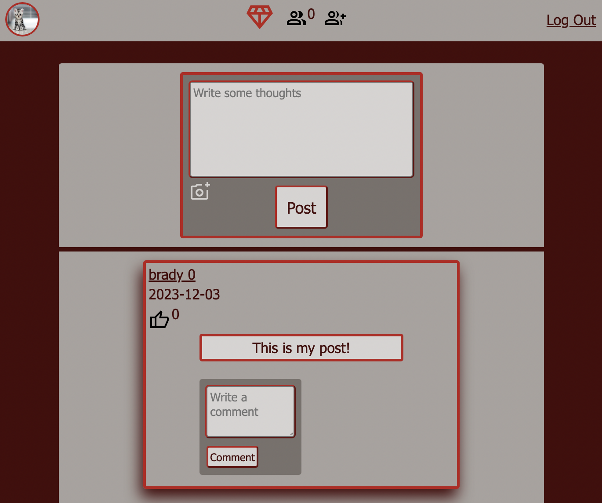
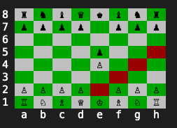
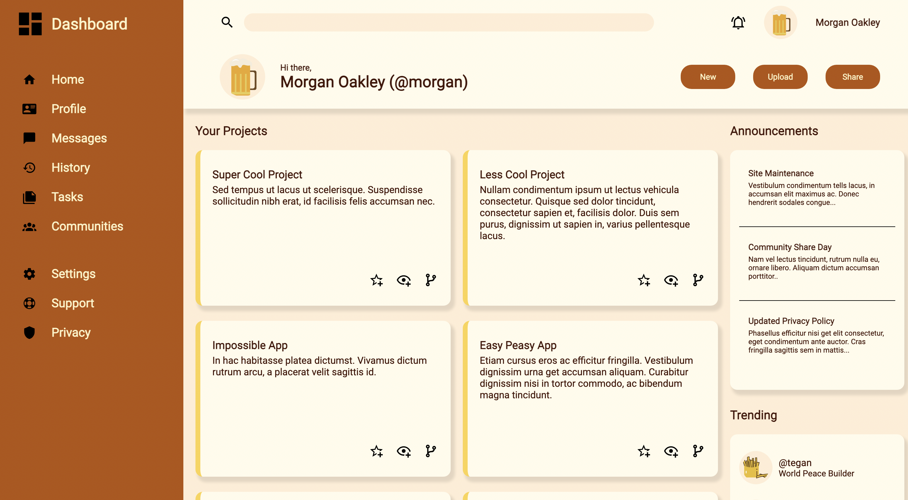
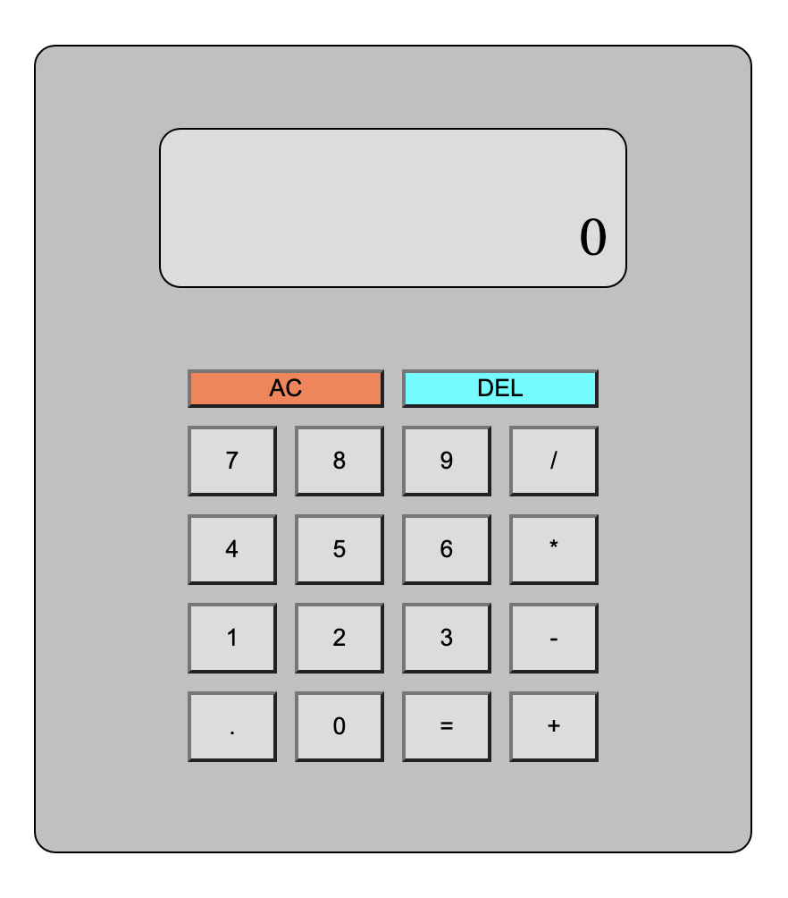
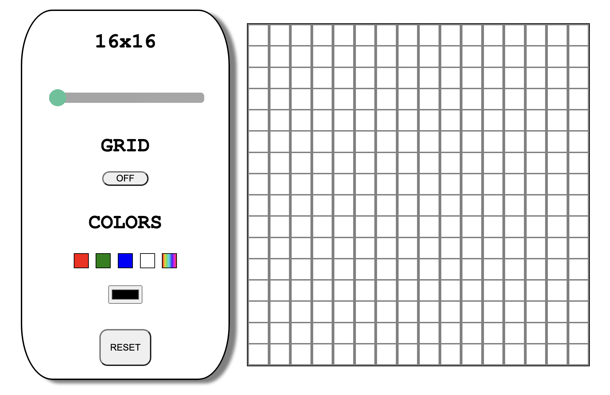

- Sign up and log in
- Uses Devise for authentication
- Make friends
- Send friend requests
- Receive friend requests
- Accept friend requests
- View all your friends
- Update your profile
- Add a profile picture
- Edit your name and personal information
- See posts you have made
- Create a post
- Create a post with only text
- Create a post with only an image
- Create a post with both an image and text
- Only friends can see your posts
- Create a comment
- Comment on your own or other posts
- Uses Turbo Streams to update page without refreshing
- Like/unlike things
- Like/unlike posts
- Like/unlike comments
- Uses Turbo Streams to update page without refreshing
My Work

Facebook Clone

Chess
- Create game
- New game
- Saved game
- Player 1: White
- Player 2: Black
- Select pieces
- Uses command like to select a piece
- Available moves will display in red
- Cannot grab opponents pieces
- Cannot grab empty square
- Move pieces
- Capture oppenents pieces
- Cannot make illegal moves
- Cannot make moves that expose the king
- Cannot capture the king
- The pieces
- All pieces have their respective moves and abilities
- Checkmate
- Checkmate rules are in effect
- Prevents loss from King being immobile due to allies
- King cannot move itself into checkmate
- The game can be saved/exited at any time

Admin Dashboard
- Created using grid rather than flexbox for the entire website
- Added some animations to the buttons and navigation list
- Design reference: design
{kind=link}

Sign Up Form
- Gained experience styling HTML forms
- Gained experience working with background images
- Design reference: design
{kind=link}

Calculator
- Stores running tally
- Calculator functions
- Works with floating point numbers
- Add
- Subtract
- Divide
- Multiply
- Delete tally
- Delete last number from tally

Etch-A-Sketch
- Adjust drawing grid using slider
- Can remove grid lines
- Colors
- 4 static colors
- Rainbow color
- Color picker
- Drawing
- Click and drag to draw
- Can reset grid